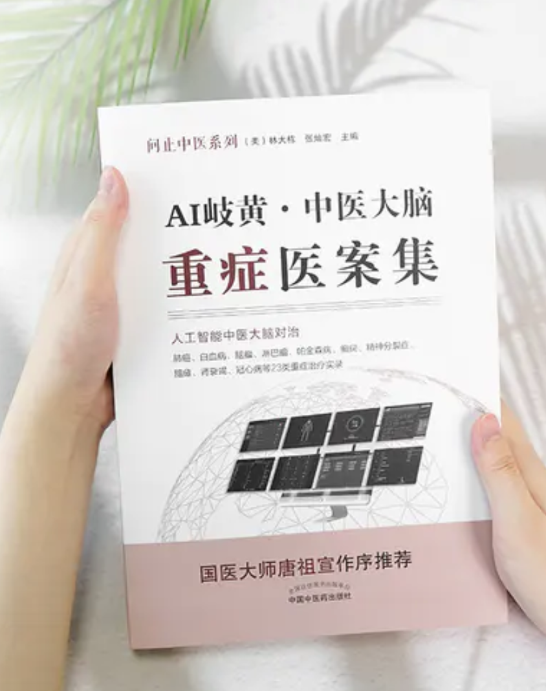

AI岐黃：中醫大腦重症醫案集

本書是《AI岐黃——中醫大腦醫案集》的姊妹篇。在前書治療臨床常見案例基礎上，本書著重選取臨床重症治療效果較好的案例，如肺癌、腦瘤、白血病、帕金森、癲癇、腎功衰、冠心病等，以體現中醫人工智能的專業水平與進步速度。
020年6月，以「科技創新中醫」為使命的問止中醫發布了《AI岐黃——中醫大腦醫案集》，受到了業內專家學者們的好評。
人間一年，AI一代。飛速進化的中醫人工智能——問止AI中醫大腦，早已今非昔比。
在傷寒經方的引領下，歷代明醫的支持下，海量臨證數據的滋養下，以及大量優秀計算機工程師不斷邏輯優化輔助下，中醫大腦已超越常見疑難雜症的診療范疇，其認知觸角已逐漸延伸到當今醫學界公認的疑難病症，如癌症、癲癇、帕金森病等等。
2021年9月，問止中醫攜AI中醫大腦最新30則對治癌重症醫案，精心整理編排，出版了第二本醫案集——《AI岐黃——中醫大腦重症醫案集》。
《AI岐黃——中醫大腦重症醫案集》仍由中醫藥出版界的權威中國中醫藥出版社出版發行，全書記錄的30則醫案均為癌重疑難症。
|